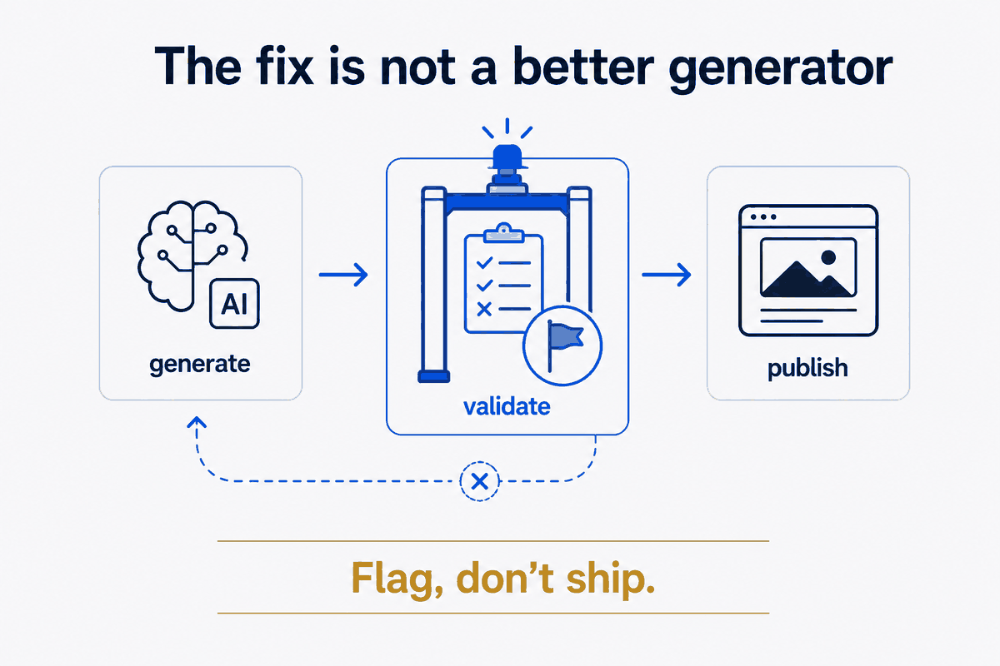

Caught red-handed
The hero image at the top of my article Why Structure Beats Magic had the word "BEATS" rendered in green. My brand accent is blue. On the laptop screen in the picture, where a notes app should have been, the AI had written "lOTES" and a scatter of characters that spell nothing. In the notebook beside it, lines of confident, total gibberish posing as handwriting.
I had published that. On the homepage of a site whose entire argument is that quality comes from structure, not from hoping the machine gets it right. The image was the argument, refuting itself in real time.
It gets better. Elsewhere on the site an audit turned up a coffee mug reading "BUT FIRST COFFEE" next to the word "Vorious" (it meant "Various"). A LinkedIn logo rendered as "Linkedln" — lowercase L where the capital I belongs. A passport prop stamped "BENTUNO GALOSOL." A caption that promised to "improxe" things. Each one generated in a second, dropped onto the page, and shipped — because it looked right at a glance and nobody made it earn its place.
Why this is fatal, specifically here
Every site has the occasional typo. This is worse than a typo, and worse on this site than most.
AI image generators are extraordinary at composition and light and utterly unreliable at text. They don't spell — they produce text-shaped marks. So the moment your infographic has a label, a screen, a logo, or a book spine in it, you've invited a confident little lie into the frame. It's not a rare glitch you can wave away; it's the default behaviour of the tool, and it lands exactly where a reader's eye goes.
On a thesis site about structure and quality, a fake-text image isn't a cosmetic miss. It's a credibility hole. A reader who spots "Linkedln" doesn't think "oops, a render bug." They think "if he didn't catch that, what else didn't he check?" — and they're right to. The whole promise of the site is that the output is engineered, not improvised. One piece of gibberish and the promise is a slogan.
The fix is not a better generator
The instinct is to reach for a better model, a sharper prompt, a tool that spells. That's the magic move — buy a better wand and hope. And it doesn't work, because no current generator is reliable at text; you'd just be lowering the odds, not closing the hole.
The reliable fix is the boring one, and it's the same move this whole site is about: put a rule between the generation and the publish. Don't trust the image because it looks finished. Verify it, on purpose, before it ships. I wrote it into the styleguide as a mandatory gate — every AI image gets looked at against a short, specific checklist before it's allowed on the site:
- Fake or garbled text — any label, screen, logo, book spine, or prop. Read every word in the image. If it isn't real, it doesn't ship.
- Brand colour — accent must be blue, payoff gold. Off-brand green is out.
- Factual nits — a mislabelled ratio, a wrong author name, a city in the wrong region.
- AI artefacts — extra fingers, warped props, a style that doesn't match the rest.

And one standing rule that removes most of the risk at the source: prefer no text over fake text. An infographic with a clean unlabelled diagram beats one with confident nonsense on it every time. If the concept doesn't strictly need words baked into the pixels, leave them out — the caption carries the words; the image carries the idea.
This is the thesis, pointed at myself
Here's why I'm not embarrassed to publish the story of my own failure: the gate is the thesis.
The site's whole claim is a small formula — generate with AI, then validate against rules, flag don't guess. I had applied that religiously to text and data, and somehow exempted images, treating a picture as decoration rather than output. It isn't. An image is output like any other, and output without a validation step is just magic wearing a nice coat. The bug wasn't the generator being bad at spelling. The bug was me trusting an unvalidated artefact — the exact failure mode the site warns about.
So the correction wasn't new technology. It was extending a discipline I already had to the one place I'd let it lapse. That's almost always what "getting it right" turns out to be: not a better tool, but the same rule applied one place further than before.
The honest limit
A gate is only worth what you actually run. A checklist you skip when you're in a hurry is a checklist that doesn't exist — and the temptation to skip is highest exactly when you're excited to ship. So the gate has to be cheap enough to always run: a named step, a short list, "look at every image and read every word," not a bureaucratic review board. Structure beats magic only when the structure is usable — and a verification step you dodge is not usable, however virtuous it looks in a styleguide.
It also won't make the images good. It only stops the actively-wrong ones. Taste, composition, on-message clarity — that's a different job. The gate does one thing: it makes sure the picture isn't lying. On a site built on trust, that one thing is the one that can't be skipped.
Look at every image. Read every word. Prefer no text to fake text. Then ship.